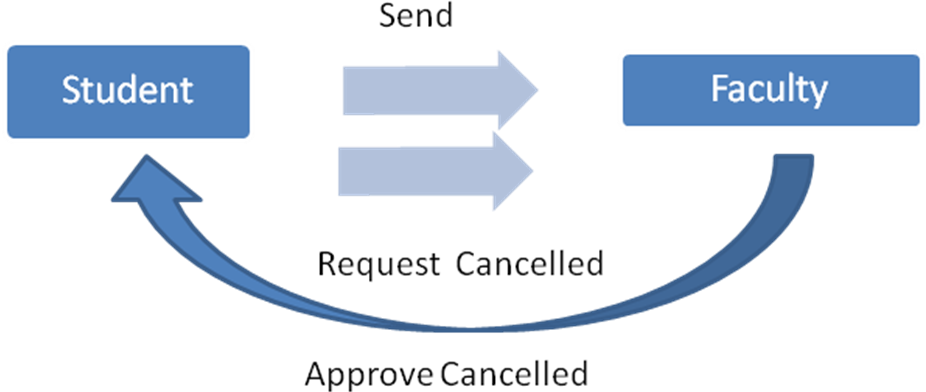
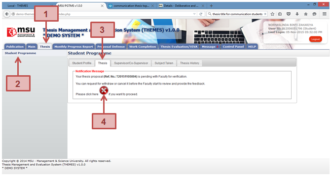
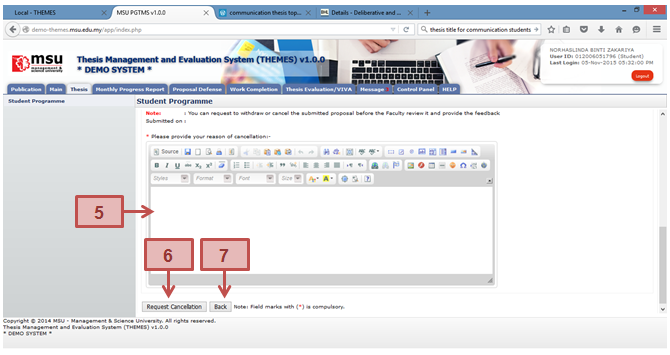
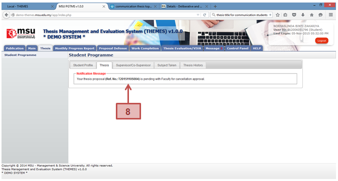

Process Flow

In this scenario, the student request for the cancellation from the Faculty after the thesis proposal has been submitted. Faculty will response through the system and notify student the cancellation.
Request for Proposal Cancellation
Student is allowed to cancel his/her newly submitted proposal in case he/she realizes some amendment need to be done.



Figure 14: Proposal Cancellation
Prerequisite
- The thesis proposal has been submitted
- The Faculty is yet to review and provide feedback status to the thesis proposal
Steps
- Click on the Thesis tab on the Top panel
- Click on the Student Programme menu on the Left panel
- Click on the Thesis tab on the Working Area
- System will display the notification message to the student indicate that the proposal has been successfully submitted to the Faculty. If the student decided to cancel the proposal, he/she can click on the Cancel button. Please note the cancellation only can be done if the Faculty is not yet provide the feedback.
- The student needs to provide the justification of the cancellation.
- Once confirm click the Request for Cancellation button.
- Otherwise the student can click Back button and wait feedback from the Faculty and Senate.
- The above message will be displayed after the student submits the cancellation request to the Faculty.
Next Action
The student is to resubmit another new thesis proposal. The new Thesis ID will be assigned as to keep track a new thesis process flow.
Warning
None
Note
None
Created with the Personal Edition of HelpNDoc: Free EPub producer